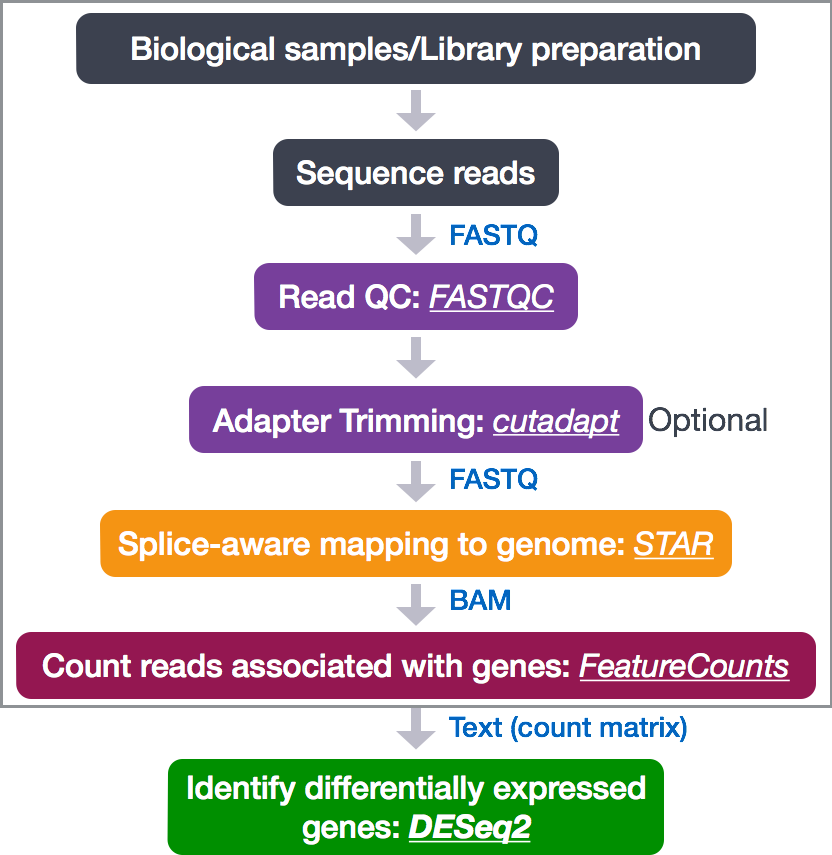
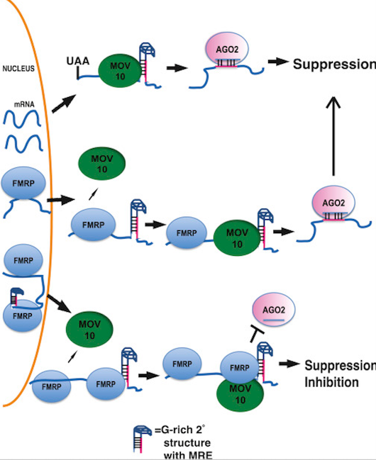
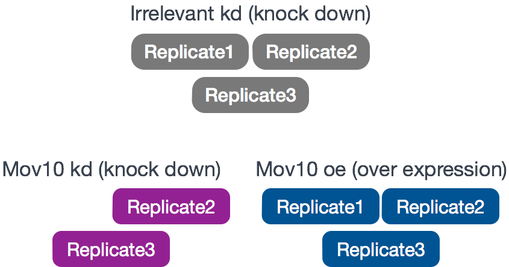
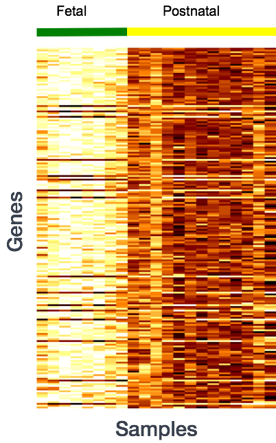
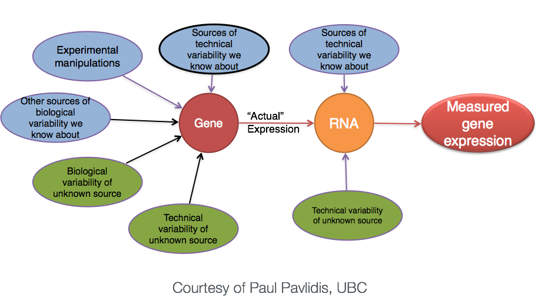
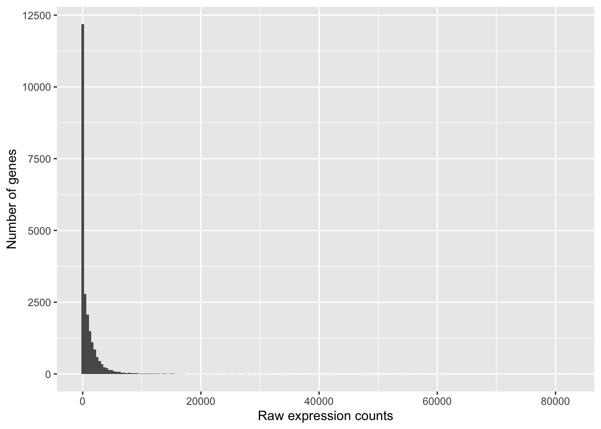
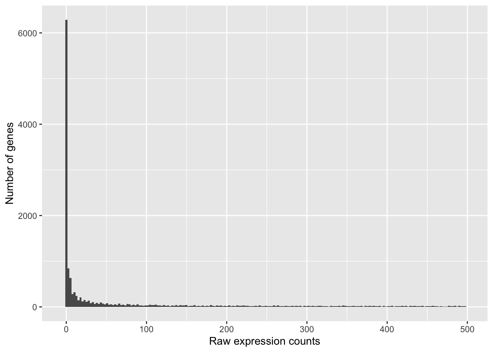
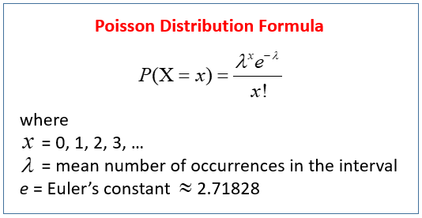
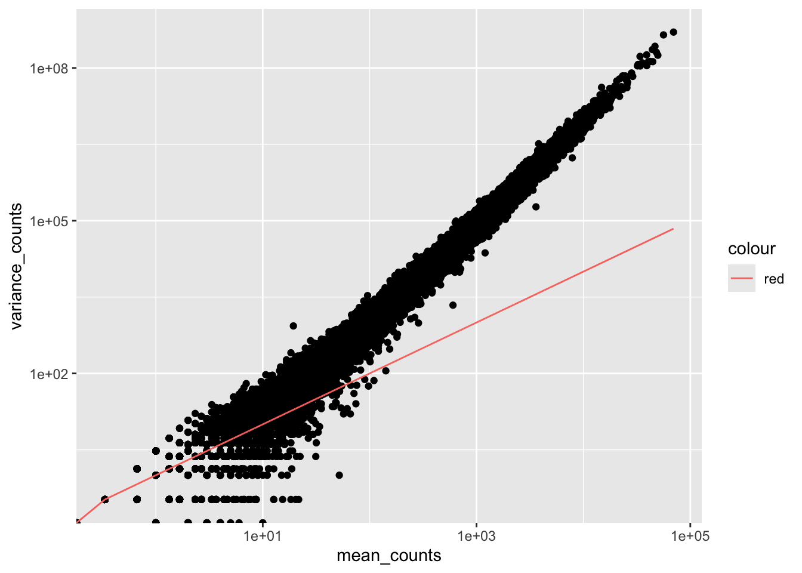
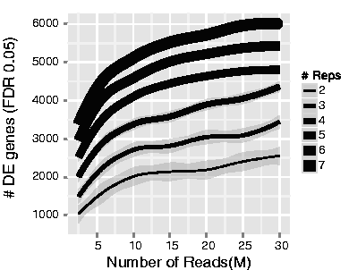

Chapter 1 Differential gene expression (DGE) analysis overview
The goal of RNA-seq is to perform differential expression testing to determine which genes are expressed at different levels between conditions. These genes can offer biological insight into the processes affected by the condition(s) of interest.
To determine the expression levels of genes, our RNA-seq workflow follows the steps detailed in the image below inside the box. All steps are performed on the command line (Linux/Unix) through the generation of read counts per gene as discussed in Corey’s lectures. The differential expression analysis and any downstream functional analysis are generally performed in R using R packages specifically designed for the complex statistical analyses required to determine whether genes are differentially expressed starting from the count matrices.

In the next few lessons, we will walk you through an end-to-end gene-level RNA-seq differential expression workflow using various R packages. We will start with the count matrix, perform exploratory data analysis for quality assessment and to explore the relationship between samples, perform differential expression analysis, and visually explore the results prior to performing downstream functional analysis.
1.1 RNA-seq Introduction: MOV10-FMRP Study
- Reference: Kenny PJ et al, Cell Rep 2014
1.1.1 Background: MOV10-FMRP Biology
What is the function of FMRP and MOV10
FMRP is the Fragile X Messenger Ribonucleoprotein. Loss of FMRP causes Fragile X Syndrome (FXS), characterized by intellectual disability and autism spectrum disorder. FMRP regulates translation of a diverse and functionally important set of genes that are crucial for brain development, synaptic function, and neuronal plasticity by binding to their mRNAs and interacting with components of the microRNA (miRNA) pathway.
MOV10 usually facilitates translation suppression through the miRNA pathway. MOV10-FMRP interactions can either enhance this suppression or, when the MOV10-FMRP complex binds in proximity to miRNA response elements (MREs), can sterically block AGO2 access and translation is no longer suppressed.

Model for MOV10-FMRP Cooperation in miRNA-Mediated Translation Regulation
Top: MOV10 helicase unwinds G-rich structures in 3′ UTRs, exposing miRNA response elements (MREs) for AGO2/RNA-induced silencing complex (RISC) binding and gene silencing by translational repression.
Middle: FMRP recruits MOV10 to remodel RNA structure, facilitating AGO2/RISC access to MREs and translational repression.
Bottom: FMRP-MOV10 complex binds in proximity to MREs, sterically blocking AGO2/RISC access and preventing miRNA-mediated suppression of translation.
1.1.2 Review of the dataset
Experimental design:
Cell type: HEK293F cells
Conditions: Cells were either transfected with a MOV10 transgene, or siRNA to knock down Mov10 expression, or non-specific (irrelevant) siRNA. This resulted in 3 conditions Mov10 oe (over expression), Mov10 kd (knock down) and Irrelevant kd, respectively.
Replicates: 2-3 biological replicates per condition (shown below)

Research objectives:
The aim of the RNA-seq part of the study was to identify MOV10 target genes and determine which overlap with FMRP targets, suggesting regulation by the MOV10-FMRP complex. Our analysis will include:
- Differential gene expression analysis (MOV10 KD vs. control, MOV10 OE vs. control)
- Identifying direct MOV10 targets (genes with opposite responses to KD vs. OE)
- Functional enrichment of MOV10-responsive genes
Links to raw data [GEO]: https://www.ncbi.nlm.nih.gov/geo/query/acc.cgi?acc=GSE51443 “Gene Expression Omnibus” [SRA]: https://trace.ncbi.nlm.nih.gov/Traces/sra/?study=SRP031507 “Sequence Read Archive”
1.2 Setting up
Make your personal codebook from the template
In the Files pane, navigate to ‘09-DGE_codebook_template.Rmd’
Check the box next to that file → click More → Copy To…
In the dialog, choose the
students_notes/folder and set the new name to:<lastname>_09-DGE_codebook.Rmd(for example, ‘garcia_09-DGE_codebook.Rmd’) → OK.Click the new file in
students_notes/to open it. This is now your working copy for your homework. This will open in the script editor in the top left hand corner. This is where we will be running all commands required for the analysis, and like last time this is where you will enter the code/answers for your homework assignment.
From now on, work only inside
students_notes/. Anything you create or edit there is yours and won’t interfere with course updates.
1.2.1 Loading libraries
For this analysis we will be using several R packages, some which have been installed from CRAN and others from Bioconductor. To use these packages (and the functions contained within them), we need to load the libraries.
1.2.2 Loading data
To load the data into our current environment, we will be using the read.table function. We need to provide the path to each file and also specify arguments to let R know that we have a header (header = T) and the first column is our row names (row.names = 1) and the sep = "\t" for tab.
## Load in data
data <- read.table("data/Mov10_full_counts.txt",
header=T, row.names=1, sep = "\t")
meta <- read.table("data/Mov10_full_meta.txt",
header=T, row.names=1, , sep = "\t")Use class() to inspect our data and make sure we are working with data frames:
## [1] "data.frame"## [1] "data.frame"1.2.3 Viewing data
Make sure your datasets contain the expected samples / information before proceeding to perform any type of analysis.
## [1] "Irrel_kd_1" "Irrel_kd_2" "Irrel_kd_3" "Mov10_kd_2" "Mov10_kd_3"
## [6] "Mov10_oe_1" "Mov10_oe_2" "Mov10_oe_3"## [1] "Mov10_kd_2" "Mov10_kd_3" "Mov10_oe_1" "Mov10_oe_2" "Mov10_oe_3"
## [6] "Irrel_kd_1" "Irrel_kd_2" "Irrel_kd_3"You’ll notice the colnames of the data are the sample names, and the rownames of the metadata are the sample names except in a different order. This is important as we will be merging the metadata with the data based on the sample names.
1.3 Differential gene expression analysis overview
So what does this count data actually represent? The count data used for differential expression analysis represents the number of sequence reads that originated from a particular gene. The higher the number of counts, the more reads associated with that gene, and the assumption that there was a higher level of expression of that gene in the sample.

With differential expression analysis, we are looking for genes that change in expression between two or more groups (defined in the metadata) - case vs. control - correlation of expression with some variable or clinical outcome
Why does it not work to identify differentially expressed gene by ranking the genes by how different they are between the two groups (based on fold change values)?

More often than not, there is much more going on with your data than what you are anticipating. Genes that vary in expression level between samples is a consequence of not only the experimental variables of interest but also due to extraneous sources. The goal of differential expression analysis to determine the relative role of these effects, and to separate the “interesting” from the “uninteresting”.

The “uninteresting” presents as sources of variation in your data, and so even though the mean expression levels between sample groups may appear to be quite different, it is possible that the difference is not actually significant. This is illustrated for ‘GeneA’ expression between ‘untreated’ and ‘treated’ groups in the figure below. The mean expression level of geneA for the ‘treated’ group is twice as large as for the ‘untreated’ group, but the variation between replicates indicates that this may not be a significant difference. We need to take into account the variation in the data (and where it might be coming from) when determining whether genes are differentially expressed.

The goal of differential expression analysis is to determine, for each gene, whether the differences in expression (counts) between groups is significant given the amount of variation observed within groups (replicates). To test for significance, we need an appropriate statistical model that accurately performs normalization (to account for differences in sequencing depth, etc.) and variance modeling (to account for few numbers of replicates and large dynamic expression range).
1.3.1 RNA-seq count distribution
To determine the appropriate statistical model, we need information about the distribution of counts. To get an idea about how RNA-seq counts are distributed, let’s plot the counts for a single sample, ‘Mov10_oe_1’:
ggplot(data) +
geom_histogram(aes(x = Mov10_oe_1), stat = "bin", bins = 200) +
xlab("Raw expression counts") +
ylab("Number of genes")
If we zoom in close to zero, we can see a large number of genes with counts of zero:
ggplot(data) +
geom_histogram(aes(x = Mov10_oe_1), stat = "bin", bins = 200) +
xlim(-5, 500) +
xlab("Raw expression counts") +
ylab("Number of genes")
These images illustrate some common features of RNA-seq count data, including a low number of counts associated with a large proportion of genes, and a long right tail due to the lack of any upper limit for expression.
1.3.2 Modeling count data
Count data is often modeled using the binomial distribution, which models the probability of success/failure outcomes over fixed trials (like counting heads in 10 coin tosses). When dealing with very large numbers of cases but very small probabilities of events (like lottery tickets), the Poisson distribution is more appropriate.

Where:
- λ = the average number of “successes”
- x = the specific number you’re asking about
- P(X = x) = probability of getting exactly that many events
With RNA-seq data, we have millions of reads sequenced, but the probability of any single read mapping to a specific gene is extremely low. Thus, it would be an appropriate situation to use the Poisson distribution. However, a unique property of this distribution is that the mean == variance. Realistically, with RNA-seq data there is always some biological variation present across the replicates (within a sample class). Genes with larger average expression levels will tend to have larger observed variances across replicates.
To test if our data meets this Poisson criteria, we’ll plot mean versus variance for the Mov10 overexpression replicates using the apply function:
To calculate the mean and variance of our data, we will use the apply function. The apply function allows you to apply a function to the margins (rows or columns) of a matrix. The syntax for apply is as follows:
apply(X, MARGIN, FUN)
where X is a matrix, MARGIN is the margin of the matrix to apply the function to (1 = rows, 2 = columns), and FUN is the function to apply.
We will use MARGIN = 1 to apply the mean and variance of the counts for each row (gene) across the Mov10 overexpression replicates. We will then create a data frame with the mean and variance of the counts for each gene.
# calculate the mean and variance of the counts for each gene
mean_counts <- apply(data[, 3:5], 1, mean)
variance_counts <- apply(data[, 3:5], 1, var)
# for ggplot we need the data to be in a data.frame
df <- data.frame(mean_counts, variance_counts)Run the following code to plot the mean versus variance for the ‘Mov10 overexpression’ replicates:
ggplot(df) +
geom_point(aes(x = mean_counts, y = variance_counts)) +
geom_line(aes(x = mean_counts, y = mean_counts, color="red")) +
scale_y_log10() + scale_x_log10()
By plotting the mean versus the variance of our data we can easily see that the variance > mean violating the Poisson assumption. Higher mean genes have even higher variance, indicating we need a different model.
The model that fits best, given this type of variability between replicates, is the Negative Binomial (NB) model. Essentially, the NB model is a good approximation for data where the variance > mean, as is the case with RNA-Seq count data.
1.3.3 Improving mean estimates (i.e. reducing variance) with biological replicates
Remember, the goal of differential expression analysis is to determine, for each gene, whether the differences in expression (counts) between groups is significant given the amount of variation observed within groups (replicates). More biological replicates reduce variance and improve mean estimates. Additional replicates provide increasingly precise group means and greater power to detect differences between conditions.
The figure below shows that increasing replicates identifies more DE genes than increasing sequencing depth because biological variability between samples is the main source of noise, not technical measurement precision.
Key insight: You can sequence one sample infinitely deep, but you still have n=1 for statistics. DESeq2 requires biological replicates to estimate variance and perform statistical tests.
Recommendation: Minimum 20-30M reads per sample, but prioritize replicates over depth.

NOTE
- Biological replicates = multiple samples (different mice)
- Technical replicates = same sample (same mouse) with technical steps replicated
- Don’t spend money on technical replicates - biological replicates are much more useful
1.3.4 Differential expression analysis workflow
To model counts appropriately when performing a differential expression analysis, a few tools are generally recommended as best practice, e.g. DESeq2 and EdgeR. Both these tools use the negative binomial model, employ similar methods, and typically, yield similar results. They are pretty stringent, and have a good balance between sensitivity and specificity (reducing both false positives and false negatives).
For this tutorial, we will be using DESeq2 for the DE analysis, and the analysis steps with DESeq2 are shown in the flowchart below. DESeq2 first normalizes the count data to account for differences in library sizes and RNA composition between samples. Then, we will use the normalized counts to make some plots for QC at the gene and sample level. The final step is to use the appropriate functions from the DESeq2 package to perform the differential expression analysis.

We will go in-depth into each of these steps in the following lessons, but additional details and helpful suggestions regarding DESeq2 can be found in the DESeq2 vignette. As you go through this workflow and questions arise, you can reference the vignette from within RStudio:
This is very convenient, as it provides a wealth of information at your fingertips! Be sure to use this as you need during the workshop.